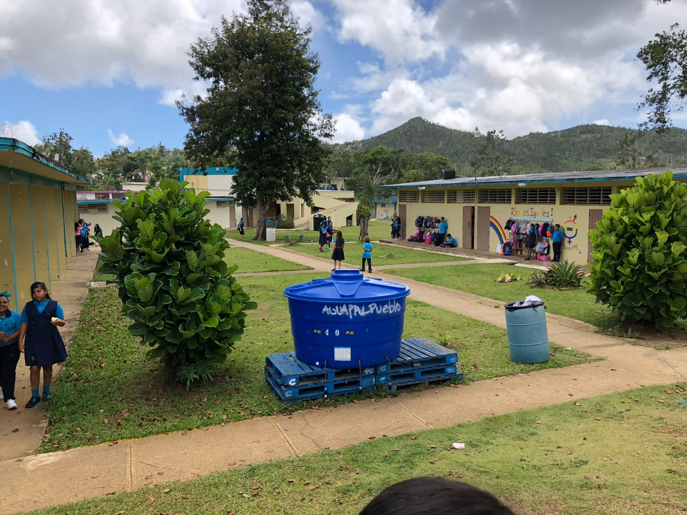

← projects
Resilience and Sustainability
After Hurricane Maria made landfall in Puerto Rico in 2017, the municipality of Aibonito was left without power and water. Like many schools around the country, La Escuela Segunda Unidad Pasto became a distribution center for food and supplies in the weeks that followed.
Working with a small team of architecture and engineering students, in conjunction with the school administration and the Yale Open Lab, we suggested a number of infrastructural and architectural renovations focused on environmental resilience and sustainability. The complete proposal was awarded finalist in the 2019 US Department of Energy Solar Decathlon elementary school division.
Landscaping of the outdoors campus serves two purposes: freeing up more space for accessible use by students, and directing gray water, such as storm runoff, along intentional channels to reduce flooding and erosion.

An abandoned factory building adjacent to (and now owned by) the school was incorporated into the renovation. This would serve as a multipurpose activity and meeting space for use by the students and the community, and could be used as a shelter in times of emergency.

.jpg)
Plumbing, including graywater and blackwater storage and treatment, poses a logistical challenge and health hazard for the school currently. We propose a system of graywater runoff, an industrial septic system, and planting of a leeching field to neutralize sewage water.